This tutorial guides data contributors through submitting new speleothem data to SISAL with the SISAL Web Submit application. It is written for authors of a publication that generated speleothem data, as well as for independent data contributors.
By the end of the tutorial, you will have a QC-checked workbook and a single .zip package containing
the validated workbook, the generated plots, a site map and a diagnostic report, ready to be forwarded to the SISAL
data stewards. The automated steps usually take only a few minutes each, depending on the size of the workbook and
the number of entities it contains. Most of the time is typically spent on filling in the workbook.
The workflow starts offline with the Excel template, and continues in the browser through four phases (Figure T1). Only a workbook without errors may proceed from the validation to the plotting phase, and only plots accepted by the contributor lead to the download phase. If the validation reports errors or the plots reveal a problem, the workbook has to be corrected and uploaded again. Warnings do not stop the process, but it is recommended to eliminate them as well.
For the background of the application and its place in the SISAL submission workflow, see the About page. A more technical description of the processing steps is given in the execution flowchart (Figure S5).
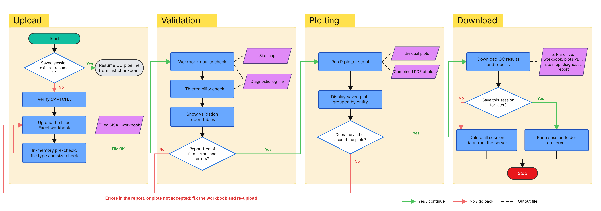
The latest version of the submission template is always available in the official SISAL GitHub repository.
To download it, click on the appropriate .xlsx file from the repository list
(e.g., SISAL_workbook_v15_template.xlsx), and then click the "Download raw file"
icon located in the top right corner of the file view (Figure T2).
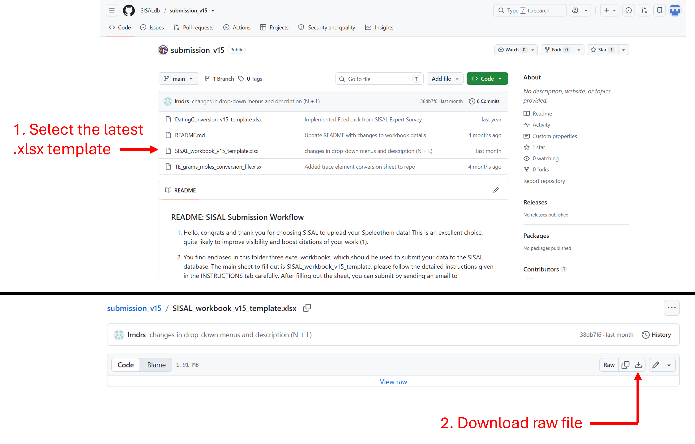
All your data must be entered directly into the designated sheets of the downloaded template (Figure T3). Please read and carefully follow the detailed guidelines provided in the "INSTRUCTIONS" tab of the workbook before you begin. It is strictly required that you do not alter the template's structure, as the automated quality control relies on this exact unified schema to process your submission successfully.
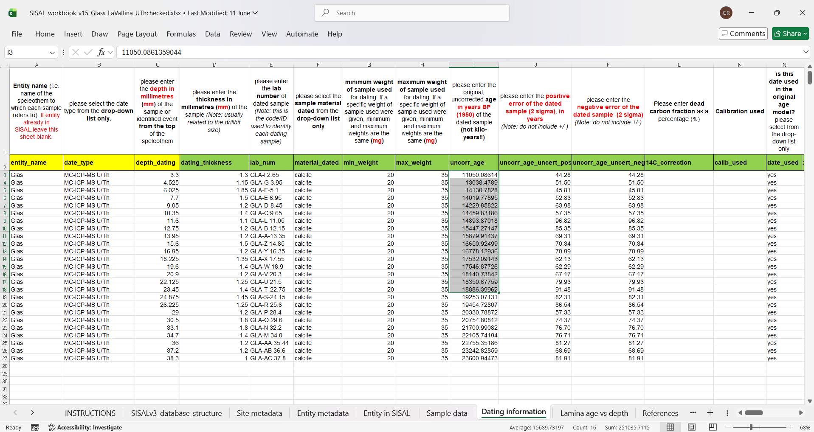
To begin the online quality control process, navigate to the upload page by clicking the button above or entering the URL into your browser. You will see the initial interface (Figure T4) featuring a four-step progress tracker indicating that you are currently in the Upload phase.
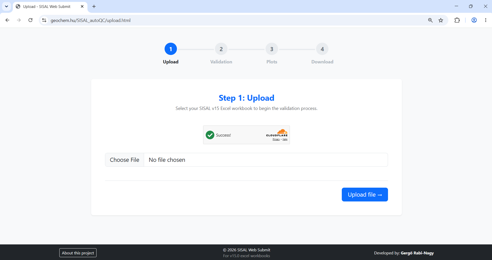
The application utilizes browser cookies to track returning users and isolate their sessions. If a previously saved session is found on the server, a dialog box will automatically appear asking whether you wish to continue the saved session or discard it (Figure T5).
Choose the Continue button to pick up the validation pipeline from your last checkpoint without having to re-upload files or re-verify the CAPTCHA.
Choose the Discard button if you have a new or updated workbook and wish to start a completely new submission cycle.
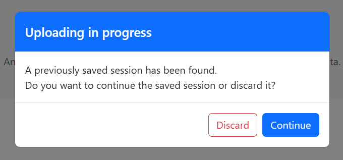
The rest of this tutorial follows the standard "new upload" path, as it is the most common scenario. If you choose to resume a session, the process simply skips the upload step and automatically jumps forward to your last active phase.
First, you must verify that you are human using the integrated Cloudflare Turnstile CAPTCHA; an upload attempted without it is blocked (Figure T6). After successful verification, use the file input field to select your completed workbook. The system strictly enforces upload limits for security (Table T1): only standard Excel files up to a maximum of 10 MB are allowed.
| Requirement | Limit |
|---|---|
| File type | .xlsx |
| Maximum file size | 10 MB |
| Template version | v15 |
Table T1. Upload requirements.
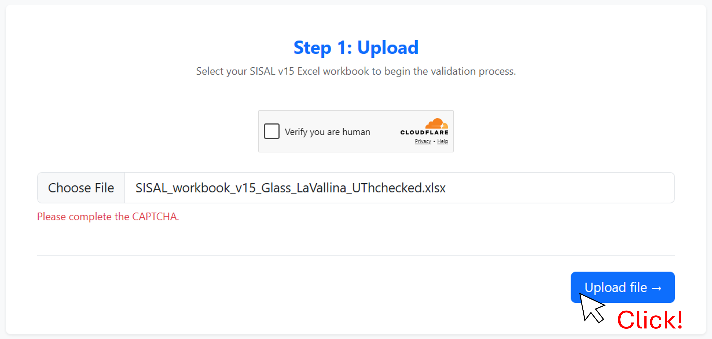
Once your file is selected and the CAPTCHA is verified, click the Upload file button to submit. The application immediately performs an in-memory structural pre-check to validate the file type and size before saving anything to the server. If your selected file exceeds the strict size limit, the pipeline will halt and display an error message (Figure T7). If all pre-checks pass successfully, the pipeline automatically advances to the Validation phase.
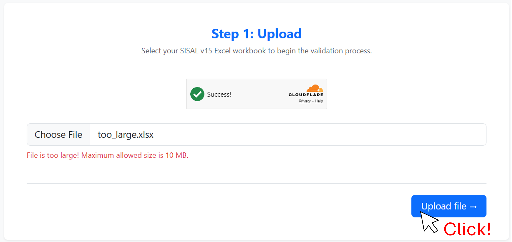
Once the upload completes, the automated quality control begins. The system runs the Python script wb_check_v15.py as a
background process to perform comprehensive workbook quality and U-Th credibility checks. The execution progress is displayed live on
your screen via a progress bar and a detailed status window indicating the current validation step (Figure T8). When the analysis finishes, a
validation report is generated (Figure T9), displaying the diagnostic results grouped into separate tables based on their category.
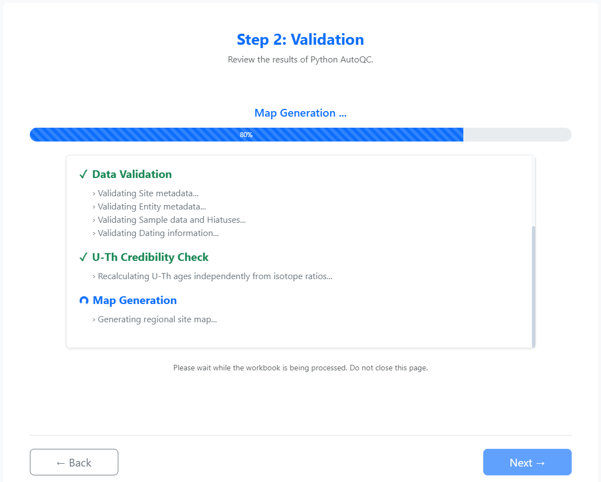
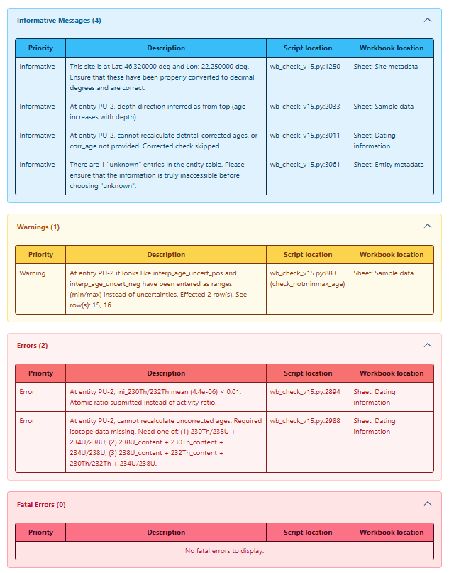
The diagnostic messages generated by the validation script are classified into four distinct severity levels (Table T2). It is important to understand how each category impacts your submission and whether they block the workflow. Furthermore, legacy messages were refined to include exact script and workbook locations to assist in precise debugging. The columns of the report tables are described in Table T3 and illustrated in Figure T10.
| Category | Meaning | Can the pipeline continue? |
|---|---|---|
| Informative | General diagnostic information or successful check notifications. | Yes |
| Warning | Non-critical issues that should ideally be addressed, but do not strictly halt the submission. | Yes |
| Error | Critical data or formatting issues that violate the SISAL schema. | No |
| Fatal error | Severe structural problems preventing the script from running. | No |
Table T2. Message categories of the validation report.
| Column | Description |
|---|---|
| Priority | The severity classification of the message. |
| Description | A detailed explanation of the issue found in the data. |
| Script location | The exact function and line number in the Python script where the check occurred. |
| Workbook location | The specific Excel sheet where the problem is located. |
Table T3. Columns of the validation report tables.
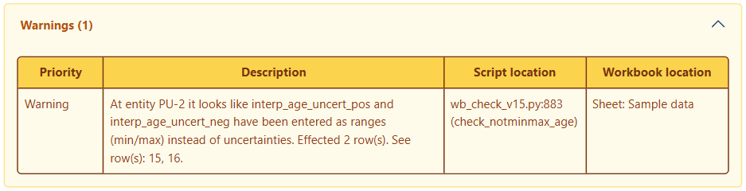
Carefully review the generated validation report. If the system detects any Error or Fatal error messages (see Table T2), the validation is considered failed. In this case, the pipeline halts completely, and you are blocked from proceeding to the plotting phase (Figure T11). You must correct the identified issues in your local Excel workbook and re-upload the file to run the validation again. If your workbook only contains Informative messages or non-critical Warning messages, the validation passes, and you can click the Next button to continue to the plotting phase.
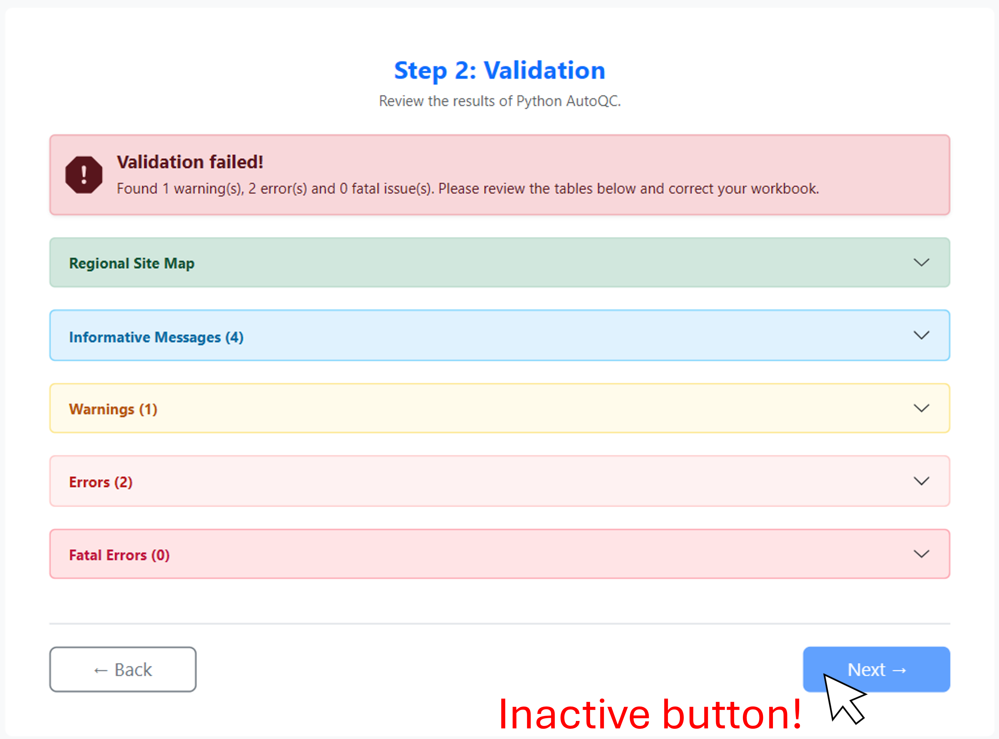
The application automatically executes an R script in the background to generate age-model and proxy time-series plots based on your validated data. The progress is shown live on the interface (Figure T12), detailing steps like "Initialization", "Data Preparation", and "Plot Generation". Since plots are generated separately for every entity in the workbook, this process can take a while for larger submissions.
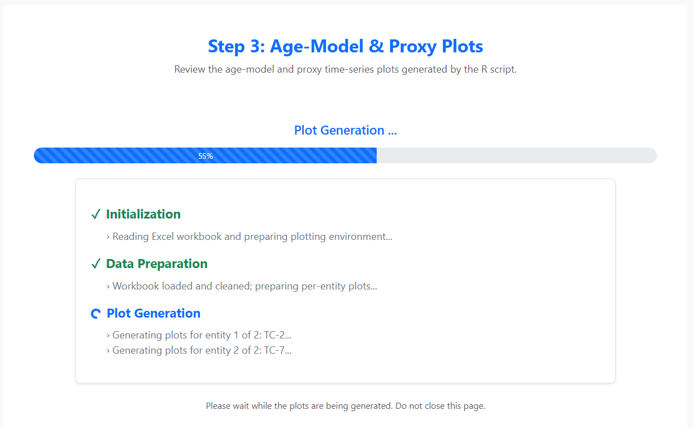
When the generation finishes, a success message displays the total number of images created. The plots are grouped under expandable entity headers (Figure T13). Review all of them carefully, as this visual inspection is your last chance to spot data-entry mistakes before the dataset reaches the SISAL data stewards. The plot types generated for each entity and the points to check on them are summarised in Table T4; examples are shown in Figure T14 (age model), Figure T15 (hiatus), Figure T16 (d18O) and Figure T17 (d13C).
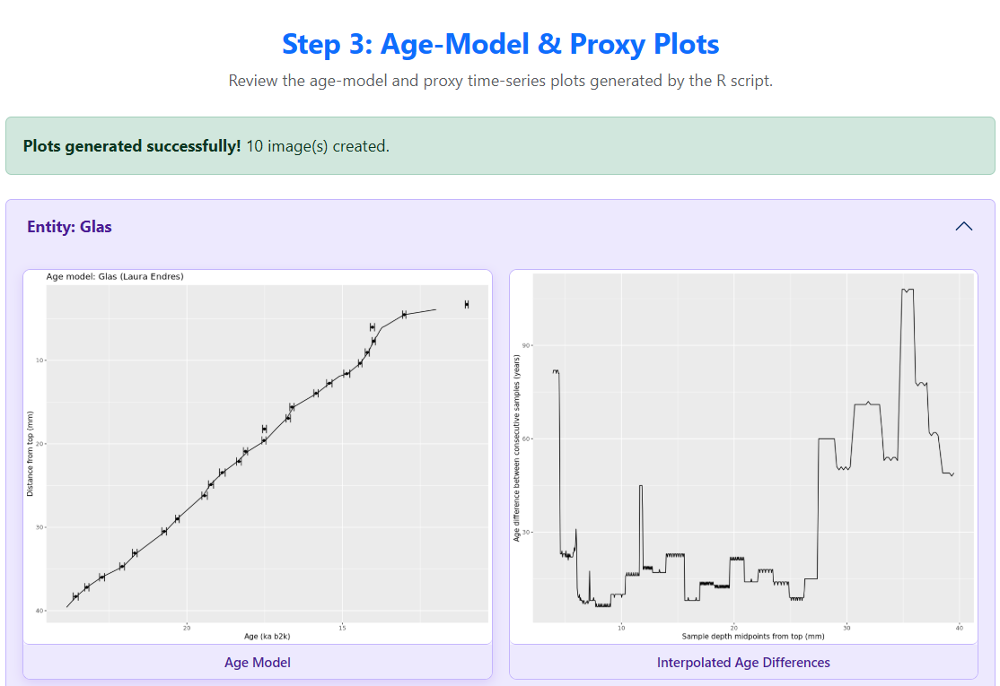
| Plot | What it shows | What to check |
|---|---|---|
| Age model | Plots "Distance from top (mm)" against "Age (ka b2k)". | Verify the position of dating points, uncertainty bands, and the overall age-depth curve. |
| Hiatuses | Shows a red dotted line labeled "hiatuses in workbook" across the age model graph. | Ensure the hiatus appears at the correct depth as intended in your uploaded data. |
| Proxy time series | Displays proxy values such as d18O (permil) or Sr/Ca (mmol/mol) against time (Age). | Check for correct units, proper axis scaling, and potential data outliers. |
Table T4. Plot types generated for each entity.
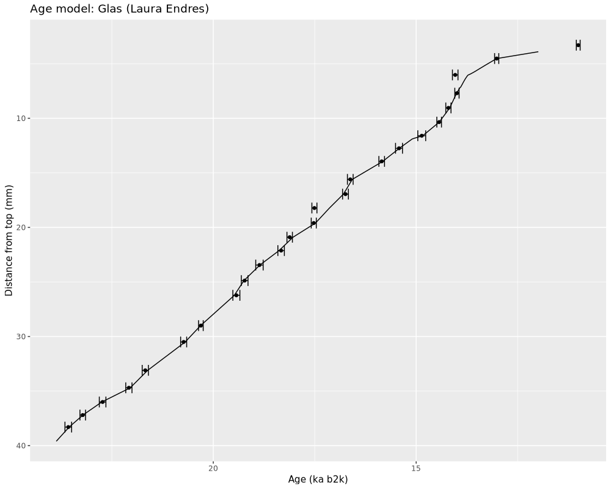
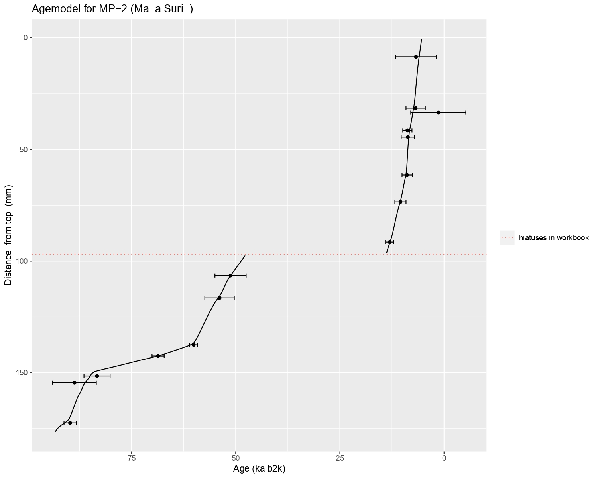
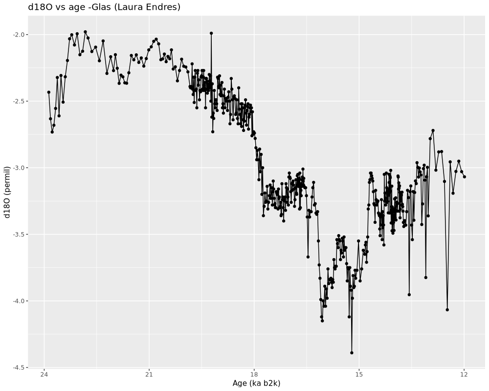
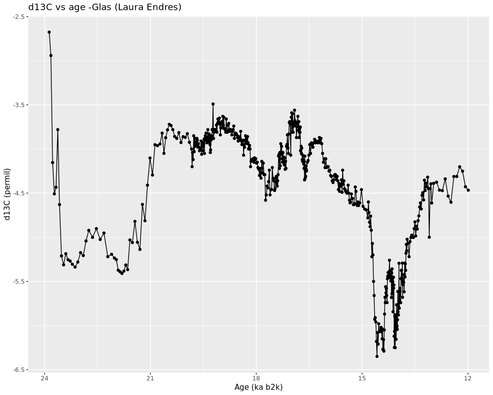
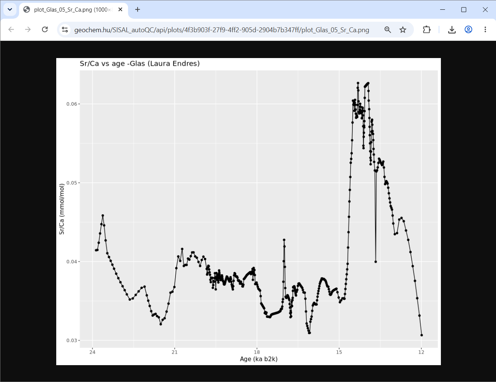
If the visualizations are satisfactory and accurately represent your data, click the Next button at the bottom of the page to proceed to the download phase (Figure T19). If you discover any anomalies or mistakes during the visual inspection, click the Back button to discard the progress, correct the data in your Excel workbook, and go back to re-upload it.
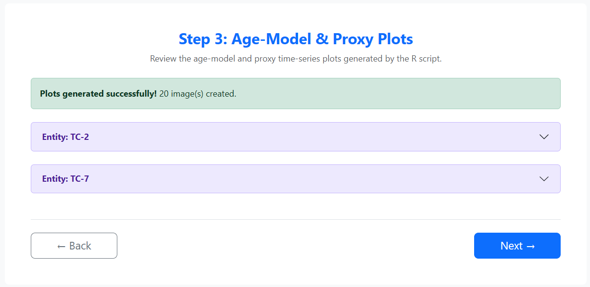
To finalize the process, click the green Download results (.zip) button to retrieve your archive (Figure T20). This package contains all the necessary files and is exactly what you need to forward to the SISAL data stewards to submit your data. The contents of the archive are listed below and shown in Figure T21.
.xlsx):
The validated Excel file containing your data.
.pdf):
A consolidated document containing the generated age models and proxy plots.
.png):
An image file showing the geographical location of the site.
.txt):
A text file logging the validation results.
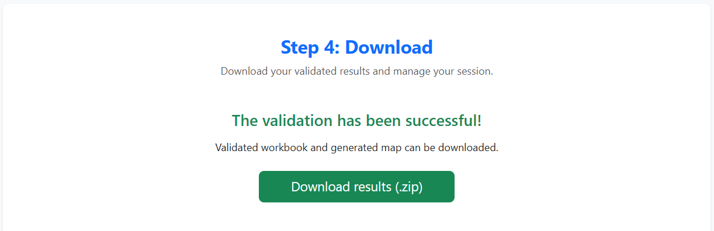
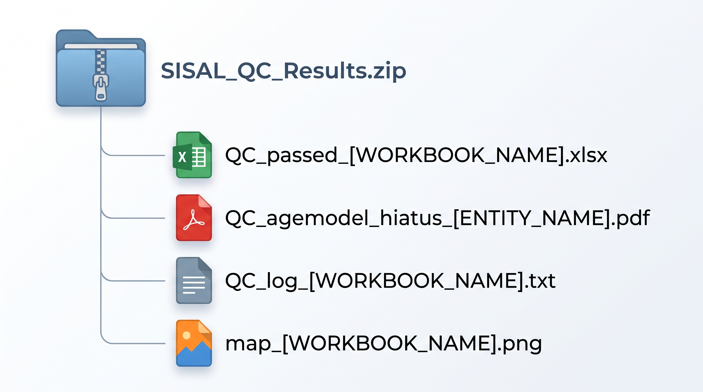
On the Download page, you must decide how to manage your session data on the server (Figure T22). You can either keep your files available for a limited time or securely delete them immediately.
Click the Save (7 days) button to keep your session folder on the server for an additional 7 days. A reference is stored in your browser's cookies, allowing you to return and download the files again if needed without restarting the process.
Click the Discard button to immediately and permanently delete all your uploaded and generated files from the server. This action cannot be undone.